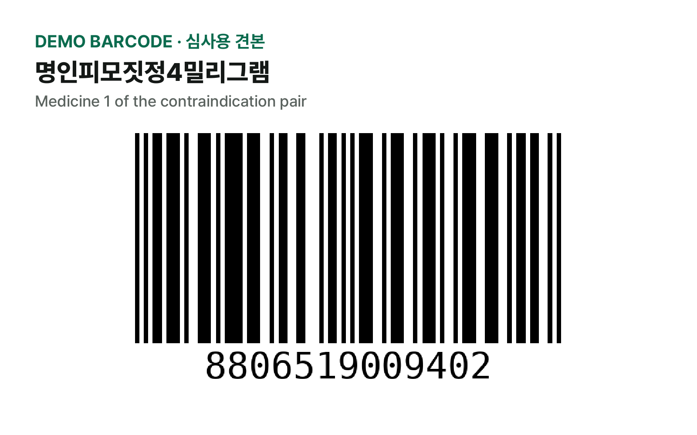
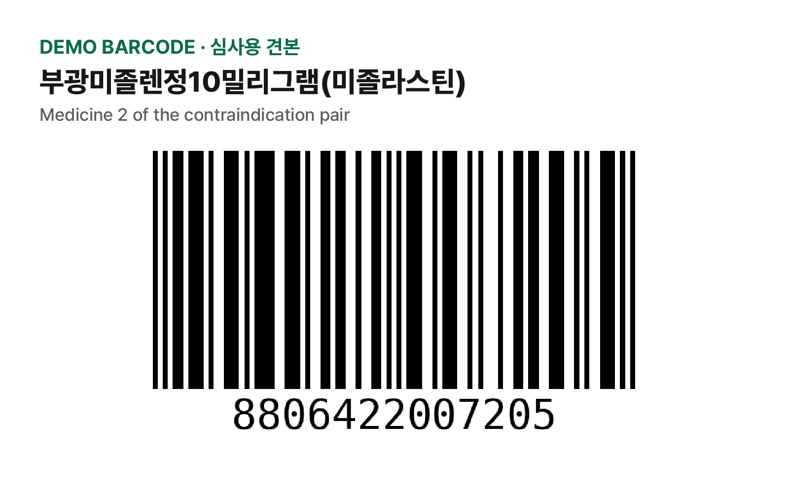
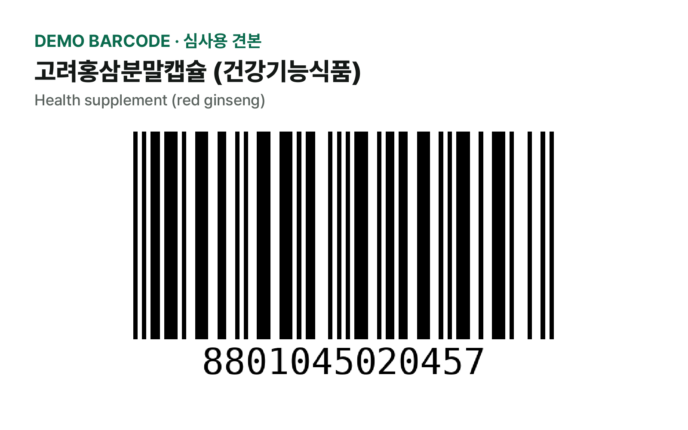
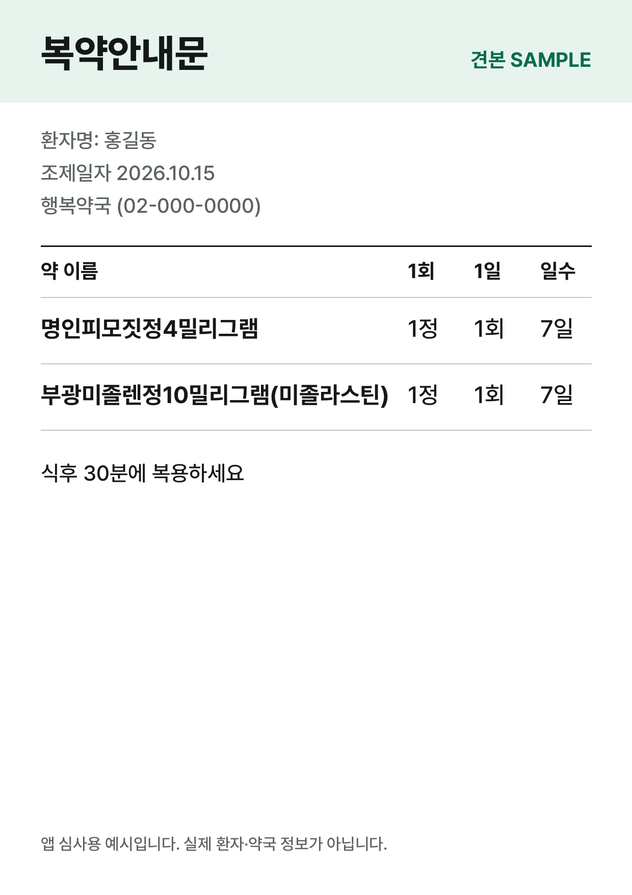

App Review demo materials
약궁합 (Yakgunghap) · Sample images for testing the barcode and pharmacy-bag features. They contain no real patient or pharmacy information.
1. Box barcode (상자 바코드)
Show this page on another screen (for example a Mac) and scan it with the review device.
- In the app, tap "약 추가" (Add) on the "내 약통" tab, then "상자 바코드" (Box barcode).
- On the camera explanation screen tap "계속" (Continue) and choose whether to allow camera access in the system prompt.
- Point the camera at barcode 1. The app opens 명인피모짓정4밀리그램; tap "이 약이 맞아요 — 내 약통에 넣기" (Add to my medicines).
- Do the same with barcode 2 (부광미졸렌정10밀리그램(미졸라스틴)). The home screen then shows a red "위험 1" (Danger 1) contraindication.
- Barcode 3 is a health supplement (고려홍삼분말캡슐, red ginseng).



2. Pharmacy bag / prescription (약봉투·처방전)
The easiest way is to pick the sample from Photos, so no second screen is needed.
- On the review device, open this page in Safari, touch and hold the sample below and tap "Save to Photos" (or download sample-medication-guide.png).
- In the app, tap "약 추가" (Add), then "약봉투·처방전" (Pharmacy bag / prescription), then "앨범에서 고르기" (Choose from album) and select the sample. (Or tap "사진 찍기" (Take photo) and photograph it on another screen.)
- The app reads the text on the device, skips the lines that look like personal information (name, date, pharmacy) and preselects the two medicines. Tap "고른 2개 내 약통에 넣기" (Add the 2 selected to my medicines).
- The home screen shows the same contraindication as above. The photo copy is deleted right after reading.

